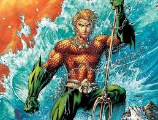

his telepathy was once limited to marine-based lifeforms including fish and some mammals such as whales and dolphins. As he grew older, Aquaman was able to increase the range of his telepathy to include land-based mammals as well as human beings
 \auqman has the abilty to breath underwater as well as travel up too 10,000 feet per a secend (6818.182 miles per a hour)